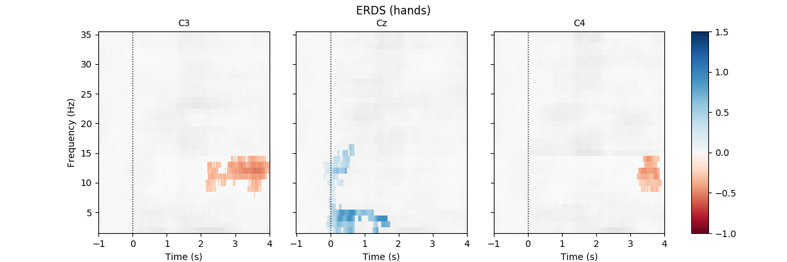
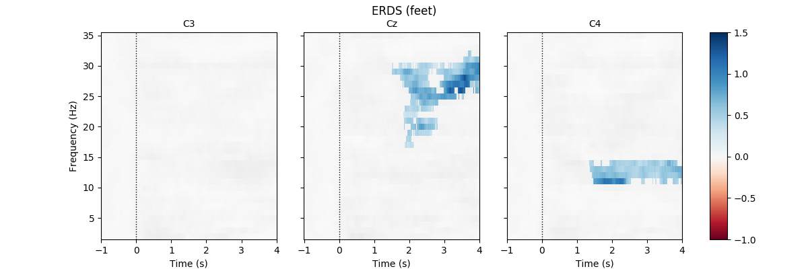

Note
Click here to download the full example code
Compute and visualize ERDS maps¶
This example calculates and displays ERDS maps of event-related EEG data. ERDS (sometimes also written as ERD/ERS) is short for event-related desynchronization (ERD) and event-related synchronization (ERS) 1. Conceptually, ERD corresponds to a decrease in power in a specific frequency band relative to a baseline. Similarly, ERS corresponds to an increase in power. An ERDS map is a time/frequency representation of ERD/ERS over a range of frequencies 2. ERDS maps are also known as ERSP (event-related spectral perturbation) 3.
We use a public EEG BCI data set containing two different motor imagery tasks available at PhysioNet. The two tasks are imagined hand and feet movement. Our goal is to generate ERDS maps for each of the two tasks.
First, we load the data and create epochs of 5s length. The data sets contain multiple channels, but we will only consider the three channels C3, Cz, and C4. We compute maps containing frequencies ranging from 2 to 35Hz. We map ERD to red color and ERS to blue color, which is the convention in many ERDS publications. Finally, we perform cluster-based permutation tests to estimate significant ERDS values (corrected for multiple comparisons within channels).
References¶
- 1
G. Pfurtscheller, F. H. Lopes da Silva. Event-related EEG/MEG synchronization and desynchronization: basic principles. Clinical Neurophysiology 110(11), 1842-1857, 1999.
- 2
B. Graimann, J. E. Huggins, S. P. Levine, G. Pfurtscheller. Visualization of significant ERD/ERS patterns in multichannel EEG and ECoG data. Clinical Neurophysiology 113(1), 43-47, 2002.
- 3
S. Makeig. Auditory event-related dynamics of the EEG spectrum and effects of exposure to tones. Electroencephalography and Clinical Neurophysiology 86(4), 283-293, 1993.
- 
- 
Out:
Extracting EDF parameters from /home/circleci/mne_data/MNE-eegbci-data/files/eegmmidb/1.0.0/S001/S001R06.edf...
EDF file detected
Setting channel info structure...
Creating raw.info structure...
Reading 0 ... 19999 = 0.000 ... 124.994 secs...
Extracting EDF parameters from /home/circleci/mne_data/MNE-eegbci-data/files/eegmmidb/1.0.0/S001/S001R10.edf...
EDF file detected
Setting channel info structure...
Creating raw.info structure...
Reading 0 ... 19999 = 0.000 ... 124.994 secs...
Extracting EDF parameters from /home/circleci/mne_data/MNE-eegbci-data/files/eegmmidb/1.0.0/S001/S001R14.edf...
EDF file detected
Setting channel info structure...
Creating raw.info structure...
Reading 0 ... 19999 = 0.000 ... 124.994 secs...
Used Annotations descriptions: ['T1', 'T2']
45 matching events found
No baseline correction applied
Not setting metadata
0 projection items activated
Loading data for 45 events and 961 original time points ...
0 bad epochs dropped
Not setting metadata
Applying baseline correction (mode: percent)
Using a threshold of 1.724718
stat_fun(H1): min=-8.523637 max=3.197747
Running initial clustering
Found 78 clusters
Permuting 99 times...
0%| | : 0/99 [00:00<?, ?it/s]
7%|7 | : 7/99 [00:00<00:00, 205.07it/s]
16%|#6 | : 16/99 [00:00<00:00, 207.46it/s]
27%|##7 | : 27/99 [00:00<00:00, 211.29it/s]
37%|###7 | : 37/99 [00:00<00:00, 214.37it/s]
48%|####8 | : 48/99 [00:00<00:00, 218.10it/s]
60%|#####9 | : 59/99 [00:00<00:00, 221.77it/s]
71%|####### | : 70/99 [00:00<00:00, 225.33it/s]
82%|########1 | : 81/99 [00:00<00:00, 228.83it/s]
93%|#########2| : 92/99 [00:00<00:00, 232.30it/s]
100%|##########| : 99/99 [00:00<00:00, 235.93it/s]
100%|##########| : 99/99 [00:00<00:00, 303.81it/s]
Computing cluster p-values
Step-down-in-jumps iteration #1 found 0 clusters to exclude from subsequent iterations
Done.
Using a threshold of -1.724718
stat_fun(H1): min=-8.523637 max=3.197747
Running initial clustering
Found 65 clusters
Permuting 99 times...
0%| | : 0/99 [00:00<?, ?it/s]
10%|# | : 10/99 [00:00<00:00, 295.75it/s]
19%|#9 | : 19/99 [00:00<00:00, 294.13it/s]
28%|##8 | : 28/99 [00:00<00:00, 292.63it/s]
36%|###6 | : 36/99 [00:00<00:00, 289.23it/s]
44%|####4 | : 44/99 [00:00<00:00, 286.01it/s]
53%|#####2 | : 52/99 [00:00<00:00, 283.07it/s]
60%|#####9 | : 59/99 [00:00<00:00, 277.97it/s]
71%|####### | : 70/99 [00:00<00:00, 280.02it/s]
80%|#######9 | : 79/99 [00:00<00:00, 279.32it/s]
91%|######### | : 90/99 [00:00<00:00, 281.30it/s]
100%|##########| : 99/99 [00:00<00:00, 282.22it/s]
100%|##########| : 99/99 [00:00<00:00, 268.82it/s]
Computing cluster p-values
Step-down-in-jumps iteration #1 found 1 cluster to exclude from subsequent iterations
Permuting 99 times...
0%| | : 0/99 [00:00<?, ?it/s]
10%|# | : 10/99 [00:00<00:00, 295.47it/s]
22%|##2 | : 22/99 [00:00<00:00, 297.99it/s]
33%|###3 | : 33/99 [00:00<00:00, 299.27it/s]
43%|####3 | : 43/99 [00:00<00:00, 299.07it/s]
55%|#####4 | : 54/99 [00:00<00:00, 300.31it/s]
65%|######4 | : 64/99 [00:00<00:00, 300.11it/s]
76%|#######5 | : 75/99 [00:00<00:00, 301.27it/s]
86%|########5 | : 85/99 [00:00<00:00, 301.03it/s]
97%|#########6| : 96/99 [00:00<00:00, 302.19it/s]
100%|##########| : 99/99 [00:00<00:00, 315.67it/s]
Computing cluster p-values
Step-down-in-jumps iteration #2 found 0 additional clusters to exclude from subsequent iterations
Done.
No baseline correction applied
Using a threshold of 1.724718
stat_fun(H1): min=-4.573067 max=3.687727
Running initial clustering
Found 85 clusters
Permuting 99 times...
0%| | : 0/99 [00:00<?, ?it/s]
10%|# | : 10/99 [00:00<00:00, 294.19it/s]
20%|## | : 20/99 [00:00<00:00, 294.17it/s]
30%|### | : 30/99 [00:00<00:00, 294.23it/s]
39%|###9 | : 39/99 [00:00<00:00, 292.67it/s]
49%|####9 | : 49/99 [00:00<00:00, 292.86it/s]
61%|###### | : 60/99 [00:00<00:00, 294.35it/s]
71%|####### | : 70/99 [00:00<00:00, 294.45it/s]
81%|######## | : 80/99 [00:00<00:00, 294.51it/s]
92%|#########1| : 91/99 [00:00<00:00, 295.90it/s]
100%|##########| : 99/99 [00:00<00:00, 297.85it/s]
100%|##########| : 99/99 [00:00<00:00, 301.28it/s]
Computing cluster p-values
Step-down-in-jumps iteration #1 found 1 cluster to exclude from subsequent iterations
Permuting 99 times...
0%| | : 0/99 [00:00<?, ?it/s]
10%|# | : 10/99 [00:00<00:00, 295.67it/s]
20%|## | : 20/99 [00:00<00:00, 295.60it/s]
30%|### | : 30/99 [00:00<00:00, 295.63it/s]
41%|####1 | : 41/99 [00:00<00:00, 296.99it/s]
53%|#####2 | : 52/99 [00:00<00:00, 298.24it/s]
64%|######3 | : 63/99 [00:00<00:00, 299.41it/s]
74%|#######3 | : 73/99 [00:00<00:00, 299.16it/s]
84%|########3 | : 83/99 [00:00<00:00, 298.95it/s]
95%|#########4| : 94/99 [00:00<00:00, 300.11it/s]
100%|##########| : 99/99 [00:00<00:00, 300.15it/s]
100%|##########| : 99/99 [00:00<00:00, 307.12it/s]
Computing cluster p-values
Step-down-in-jumps iteration #2 found 0 additional clusters to exclude from subsequent iterations
Done.
Using a threshold of -1.724718
stat_fun(H1): min=-4.573067 max=3.687727
Running initial clustering
Found 57 clusters
Permuting 99 times...
0%| | : 0/99 [00:00<?, ?it/s]
10%|# | : 10/99 [00:00<00:00, 295.82it/s]
21%|##1 | : 21/99 [00:00<00:00, 297.17it/s]
32%|###2 | : 32/99 [00:00<00:00, 298.46it/s]
43%|####3 | : 43/99 [00:00<00:00, 299.65it/s]
54%|#####3 | : 53/99 [00:00<00:00, 299.44it/s]
64%|######3 | : 63/99 [00:00<00:00, 299.22it/s]
72%|#######1 | : 71/99 [00:00<00:00, 295.32it/s]
80%|#######9 | : 79/99 [00:00<00:00, 291.70it/s]
90%|########9 | : 89/99 [00:00<00:00, 291.88it/s]
100%|##########| : 99/99 [00:00<00:00, 292.47it/s]
100%|##########| : 99/99 [00:00<00:00, 292.87it/s]
Computing cluster p-values
Step-down-in-jumps iteration #1 found 0 clusters to exclude from subsequent iterations
Done.
No baseline correction applied
Using a threshold of 1.724718
stat_fun(H1): min=-6.599131 max=3.329547
Running initial clustering
Found 64 clusters
Permuting 99 times...
0%| | : 0/99 [00:00<?, ?it/s]
9%|9 | : 9/99 [00:00<00:00, 265.25it/s]
19%|#9 | : 19/99 [00:00<00:00, 266.64it/s]
29%|##9 | : 29/99 [00:00<00:00, 267.89it/s]
40%|#### | : 40/99 [00:00<00:00, 270.27it/s]
51%|##### | : 50/99 [00:00<00:00, 271.43it/s]
62%|######1 | : 61/99 [00:00<00:00, 273.69it/s]
73%|#######2 | : 72/99 [00:00<00:00, 275.87it/s]
82%|########1 | : 81/99 [00:00<00:00, 275.38it/s]
92%|#########1| : 91/99 [00:00<00:00, 276.35it/s]
100%|##########| : 99/99 [00:00<00:00, 278.99it/s]
100%|##########| : 99/99 [00:00<00:00, 301.34it/s]
Computing cluster p-values
Step-down-in-jumps iteration #1 found 0 clusters to exclude from subsequent iterations
Done.
Using a threshold of -1.724718
stat_fun(H1): min=-6.599131 max=3.329547
Running initial clustering
Found 64 clusters
Permuting 99 times...
0%| | : 0/99 [00:00<?, ?it/s]
9%|9 | : 9/99 [00:00<00:00, 265.90it/s]
17%|#7 | : 17/99 [00:00<00:00, 264.29it/s]
26%|##6 | : 26/99 [00:00<00:00, 264.38it/s]
36%|###6 | : 36/99 [00:00<00:00, 265.75it/s]
46%|####6 | : 46/99 [00:00<00:00, 267.13it/s]
57%|#####6 | : 56/99 [00:00<00:00, 268.44it/s]
67%|######6 | : 66/99 [00:00<00:00, 269.65it/s]
77%|#######6 | : 76/99 [00:00<00:00, 270.82it/s]
88%|########7 | : 87/99 [00:00<00:00, 273.09it/s]
99%|#########8| : 98/99 [00:00<00:00, 275.32it/s]
100%|##########| : 99/99 [00:00<00:00, 290.12it/s]
Computing cluster p-values
Step-down-in-jumps iteration #1 found 0 clusters to exclude from subsequent iterations
Done.
No baseline correction applied
Using a threshold of 1.713872
stat_fun(H1): min=-3.687815 max=3.369164
Running initial clustering
Found 66 clusters
Permuting 99 times...
0%| | : 0/99 [00:00<?, ?it/s]
7%|7 | : 7/99 [00:00<00:00, 206.06it/s]
15%|#5 | : 15/99 [00:00<00:00, 207.42it/s]
22%|##2 | : 22/99 [00:00<00:00, 207.42it/s]
29%|##9 | : 29/99 [00:00<00:00, 207.40it/s]
38%|###8 | : 38/99 [00:00<00:00, 209.73it/s]
48%|####8 | : 48/99 [00:00<00:00, 212.83it/s]
59%|#####8 | : 58/99 [00:00<00:00, 215.87it/s]
69%|######8 | : 68/99 [00:00<00:00, 218.81it/s]
78%|#######7 | : 77/99 [00:00<00:00, 220.79it/s]
87%|########6 | : 86/99 [00:00<00:00, 222.71it/s]
96%|#########5| : 95/99 [00:00<00:00, 224.55it/s]
100%|##########| : 99/99 [00:00<00:00, 257.55it/s]
Computing cluster p-values
Step-down-in-jumps iteration #1 found 0 clusters to exclude from subsequent iterations
Done.
Using a threshold of -1.713872
stat_fun(H1): min=-3.687815 max=3.369164
Running initial clustering
Found 75 clusters
Permuting 99 times...
0%| | : 0/99 [00:00<?, ?it/s]
7%|7 | : 7/99 [00:00<00:00, 206.58it/s]
15%|#5 | : 15/99 [00:00<00:00, 207.91it/s]
25%|##5 | : 25/99 [00:00<00:00, 211.05it/s]
35%|###5 | : 35/99 [00:00<00:00, 214.11it/s]
44%|####4 | : 44/99 [00:00<00:00, 216.23it/s]
53%|#####2 | : 52/99 [00:00<00:00, 217.18it/s]
61%|###### | : 60/99 [00:00<00:00, 218.06it/s]
68%|######7 | : 67/99 [00:00<00:00, 217.46it/s]
76%|#######5 | : 75/99 [00:00<00:00, 218.36it/s]
84%|########3 | : 83/99 [00:00<00:00, 219.22it/s]
93%|#########2| : 92/99 [00:00<00:00, 221.19it/s]
100%|##########| : 99/99 [00:00<00:00, 224.15it/s]
100%|##########| : 99/99 [00:00<00:00, 250.26it/s]
Computing cluster p-values
Step-down-in-jumps iteration #1 found 0 clusters to exclude from subsequent iterations
Done.
No baseline correction applied
Using a threshold of 1.713872
stat_fun(H1): min=-5.046259 max=5.406477
Running initial clustering
Found 98 clusters
Permuting 99 times...
0%| | : 0/99 [00:00<?, ?it/s]
7%|7 | : 7/99 [00:00<00:00, 206.23it/s]
16%|#6 | : 16/99 [00:00<00:00, 208.56it/s]
26%|##6 | : 26/99 [00:00<00:00, 211.66it/s]
36%|###6 | : 36/99 [00:00<00:00, 214.73it/s]
45%|####5 | : 45/99 [00:00<00:00, 216.84it/s]
56%|#####5 | : 55/99 [00:00<00:00, 219.75it/s]
66%|######5 | : 65/99 [00:00<00:00, 222.57it/s]
76%|#######5 | : 75/99 [00:00<00:00, 225.35it/s]
84%|########3 | : 83/99 [00:00<00:00, 225.88it/s]
94%|#########3| : 93/99 [00:00<00:00, 228.59it/s]
100%|##########| : 99/99 [00:00<00:00, 231.25it/s]
100%|##########| : 99/99 [00:00<00:00, 275.61it/s]
Computing cluster p-values
Step-down-in-jumps iteration #1 found 1 cluster to exclude from subsequent iterations
Permuting 99 times...
0%| | : 0/99 [00:00<?, ?it/s]
7%|7 | : 7/99 [00:00<00:00, 206.61it/s]
16%|#6 | : 16/99 [00:00<00:00, 208.96it/s]
24%|##4 | : 24/99 [00:00<00:00, 210.20it/s]
33%|###3 | : 33/99 [00:00<00:00, 212.45it/s]
41%|####1 | : 41/99 [00:00<00:00, 213.56it/s]
48%|####8 | : 48/99 [00:00<00:00, 213.23it/s]
60%|#####9 | : 59/99 [00:00<00:00, 216.99it/s]
70%|######9 | : 69/99 [00:00<00:00, 219.92it/s]
80%|#######9 | : 79/99 [00:00<00:00, 222.79it/s]
90%|########9 | : 89/99 [00:00<00:00, 225.59it/s]
100%|##########| : 99/99 [00:00<00:00, 229.31it/s]
100%|##########| : 99/99 [00:00<00:00, 268.94it/s]
Computing cluster p-values
Step-down-in-jumps iteration #2 found 0 additional clusters to exclude from subsequent iterations
Done.
Using a threshold of -1.713872
stat_fun(H1): min=-5.046259 max=5.406477
Running initial clustering
Found 66 clusters
Permuting 99 times...
0%| | : 0/99 [00:00<?, ?it/s]
9%|9 | : 9/99 [00:00<00:00, 266.18it/s]
19%|#9 | : 19/99 [00:00<00:00, 267.49it/s]
28%|##8 | : 28/99 [00:00<00:00, 267.41it/s]
39%|###9 | : 39/99 [00:00<00:00, 269.83it/s]
49%|####9 | : 49/99 [00:00<00:00, 271.03it/s]
59%|#####8 | : 58/99 [00:00<00:00, 270.79it/s]
69%|######8 | : 68/99 [00:00<00:00, 271.96it/s]
76%|#######5 | : 75/99 [00:00<00:00, 267.80it/s]
83%|########2 | : 82/99 [00:00<00:00, 263.95it/s]
90%|########9 | : 89/99 [00:00<00:00, 260.39it/s]
97%|#########6| : 96/99 [00:00<00:00, 257.10it/s]
100%|##########| : 99/99 [00:00<00:00, 257.60it/s]
Computing cluster p-values
Step-down-in-jumps iteration #1 found 0 clusters to exclude from subsequent iterations
Done.
No baseline correction applied
Using a threshold of 1.713872
stat_fun(H1): min=-5.964817 max=4.078953
Running initial clustering
Found 92 clusters
Permuting 99 times...
0%| | : 0/99 [00:00<?, ?it/s]
6%|6 | : 6/99 [00:00<00:00, 176.24it/s]
13%|#3 | : 13/99 [00:00<00:00, 177.57it/s]
20%|## | : 20/99 [00:00<00:00, 178.85it/s]
27%|##7 | : 27/99 [00:00<00:00, 180.07it/s]
34%|###4 | : 34/99 [00:00<00:00, 181.26it/s]
44%|####4 | : 44/99 [00:00<00:00, 184.85it/s]
55%|#####4 | : 54/99 [00:00<00:00, 188.37it/s]
65%|######4 | : 64/99 [00:00<00:00, 191.86it/s]
75%|#######4 | : 74/99 [00:00<00:00, 195.30it/s]
84%|########3 | : 83/99 [00:00<00:00, 197.95it/s]
94%|#########3| : 93/99 [00:00<00:00, 201.29it/s]
100%|##########| : 99/99 [00:00<00:00, 204.51it/s]
100%|##########| : 99/99 [00:00<00:00, 252.09it/s]
Computing cluster p-values
Step-down-in-jumps iteration #1 found 1 cluster to exclude from subsequent iterations
Permuting 99 times...
0%| | : 0/99 [00:00<?, ?it/s]
9%|9 | : 9/99 [00:00<00:00, 266.06it/s]
19%|#9 | : 19/99 [00:00<00:00, 267.40it/s]
29%|##9 | : 29/99 [00:00<00:00, 268.71it/s]
39%|###9 | : 39/99 [00:00<00:00, 269.97it/s]
49%|####9 | : 49/99 [00:00<00:00, 271.15it/s]
60%|#####9 | : 59/99 [00:00<00:00, 272.26it/s]
70%|######9 | : 69/99 [00:00<00:00, 273.33it/s]
81%|######## | : 80/99 [00:00<00:00, 275.45it/s]
91%|######### | : 90/99 [00:00<00:00, 276.39it/s]
100%|##########| : 99/99 [00:00<00:00, 277.20it/s]
100%|##########| : 99/99 [00:00<00:00, 294.95it/s]
Computing cluster p-values
Step-down-in-jumps iteration #2 found 0 additional clusters to exclude from subsequent iterations
Done.
Using a threshold of -1.713872
stat_fun(H1): min=-5.964817 max=4.078953
Running initial clustering
Found 52 clusters
Permuting 99 times...
0%| | : 0/99 [00:00<?, ?it/s]
9%|9 | : 9/99 [00:00<00:00, 266.31it/s]
19%|#9 | : 19/99 [00:00<00:00, 267.64it/s]
29%|##9 | : 29/99 [00:00<00:00, 268.89it/s]
39%|###9 | : 39/99 [00:00<00:00, 270.09it/s]
49%|####9 | : 49/99 [00:00<00:00, 271.28it/s]
60%|#####9 | : 59/99 [00:00<00:00, 272.42it/s]
69%|######8 | : 68/99 [00:00<00:00, 272.13it/s]
78%|#######7 | : 77/99 [00:00<00:00, 271.83it/s]
88%|########7 | : 87/99 [00:00<00:00, 272.95it/s]
97%|#########6| : 96/99 [00:00<00:00, 272.58it/s]
100%|##########| : 99/99 [00:00<00:00, 285.58it/s]
Computing cluster p-values
Step-down-in-jumps iteration #1 found 0 clusters to exclude from subsequent iterations
Done.
No baseline correction applied
# Authors: Clemens Brunner <clemens.brunner@gmail.com>
#
# License: BSD (3-clause)
import numpy as np
import matplotlib.pyplot as plt
import mne
from mne.datasets import eegbci
from mne.io import concatenate_raws, read_raw_edf
from mne.time_frequency import tfr_multitaper
from mne.stats import permutation_cluster_1samp_test as pcluster_test
from mne.viz.utils import center_cmap
# load and preprocess data ####################################################
subject = 1 # use data from subject 1
runs = [6, 10, 14] # use only hand and feet motor imagery runs
fnames = eegbci.load_data(subject, runs)
raws = [read_raw_edf(f, preload=True) for f in fnames]
raw = concatenate_raws(raws)
raw.rename_channels(lambda x: x.strip('.')) # remove dots from channel names
events, _ = mne.events_from_annotations(raw, event_id=dict(T1=2, T2=3))
picks = mne.pick_channels(raw.info["ch_names"], ["C3", "Cz", "C4"])
# epoch data ##################################################################
tmin, tmax = -1, 4 # define epochs around events (in s)
event_ids = dict(hands=2, feet=3) # map event IDs to tasks
epochs = mne.Epochs(raw, events, event_ids, tmin - 0.5, tmax + 0.5,
picks=picks, baseline=None, preload=True)
# compute ERDS maps ###########################################################
freqs = np.arange(2, 36, 1) # frequencies from 2-35Hz
n_cycles = freqs # use constant t/f resolution
vmin, vmax = -1, 1.5 # set min and max ERDS values in plot
baseline = [-1, 0] # baseline interval (in s)
cmap = center_cmap(plt.cm.RdBu, vmin, vmax) # zero maps to white
kwargs = dict(n_permutations=100, step_down_p=0.05, seed=1,
buffer_size=None) # for cluster test
# Run TF decomposition overall epochs
tfr = tfr_multitaper(epochs, freqs=freqs, n_cycles=n_cycles,
use_fft=True, return_itc=False, average=False,
decim=2)
tfr.crop(tmin, tmax)
tfr.apply_baseline(baseline, mode="percent")
for event in event_ids:
# select desired epochs for visualization
tfr_ev = tfr[event]
fig, axes = plt.subplots(1, 4, figsize=(12, 4),
gridspec_kw={"width_ratios": [10, 10, 10, 1]})
for ch, ax in enumerate(axes[:-1]): # for each channel
# positive clusters
_, c1, p1, _ = pcluster_test(tfr_ev.data[:, ch, ...], tail=1, **kwargs)
# negative clusters
_, c2, p2, _ = pcluster_test(tfr_ev.data[:, ch, ...], tail=-1,
**kwargs)
# note that we keep clusters with p <= 0.05 from the combined clusters
# of two independent tests; in this example, we do not correct for
# these two comparisons
c = np.stack(c1 + c2, axis=2) # combined clusters
p = np.concatenate((p1, p2)) # combined p-values
mask = c[..., p <= 0.05].any(axis=-1)
# plot TFR (ERDS map with masking)
tfr_ev.average().plot([ch], vmin=vmin, vmax=vmax, cmap=(cmap, False),
axes=ax, colorbar=False, show=False, mask=mask,
mask_style="mask")
ax.set_title(epochs.ch_names[ch], fontsize=10)
ax.axvline(0, linewidth=1, color="black", linestyle=":") # event
if not ax.is_first_col():
ax.set_ylabel("")
ax.set_yticklabels("")
fig.colorbar(axes[0].images[-1], cax=axes[-1])
fig.suptitle("ERDS ({})".format(event))
fig.show()
Total running time of the script: ( 0 minutes 7.788 seconds)
Estimated memory usage: 8 MB